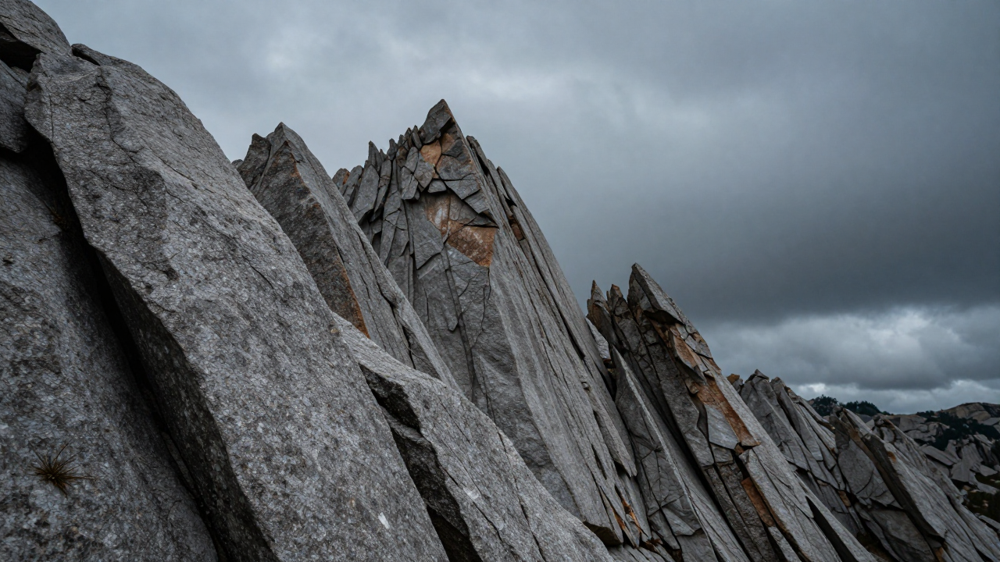

The Archive
Preserving the ephemeral whispers, wind, and stone of the high altitudes.

Current Recording
Atmospheric Recording: Seasonal Memory
Preserving the ephemeral whispers, wind, and stone of the high altitudes.

Atmospheric Recording: Seasonal Memory